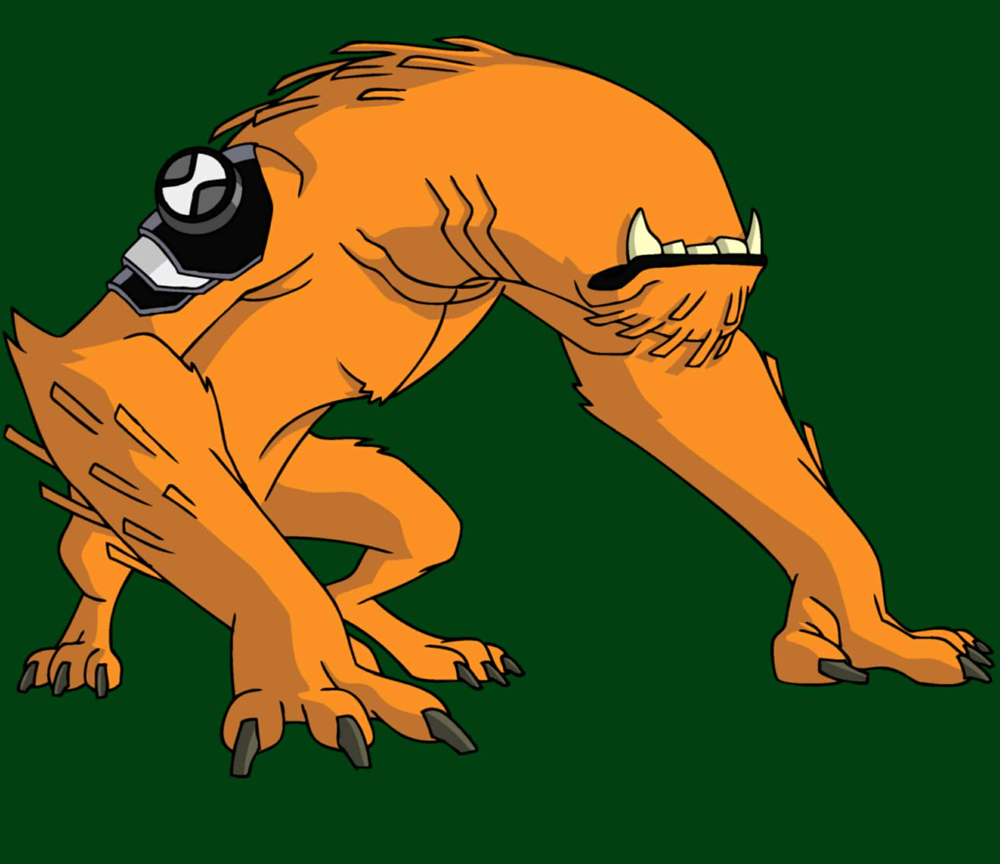

1.General Info:
Name: Wildmutt
Species: Vulpimancer
Home Planet: Vulpin
First Appearance: And Then There Were 10
2.Appearance
Looks like an orange, dog-/wolf-/ape-hybrid, hair/ fur covering, no visible eyes, ears, nose, or tail
Movements are more animalistic; usually walks on all fours, but can stand on hind legs
3.Abilities & Powers
1.No eyes, but has amazing “sightless sensing” via smell + hearing + taste → acts like a 360° radar to detect surrounding objects or beings
2.Very good smell: can track people or things by scent, even if they’re far or trying to hide or disguise themselves
3.Very good hearing; detects sounds others wouldn’t, picks up on invisible entities because of these senses
4.Sharp teeth & claws → strong bite force, slashing, ripping, cutting through materials
5.Enhanced strength for his size; can lift/carry, throw objects, break things physically
6.Enhanced speed, agility, reflexes; can run, jump, dodge, climb well
7.Enhanced durability; can take punishment, survive falls, get through tough obstacles
8.Enhanced digging ability; can dig through solid ground
9.Prehensile feet (front/bottom feet can grip or hold things)
10.Later (adulthood) ability: quill projection — fire or shoot quills from back as projectiles
4.Weaknesses
1.Cannot talk—only growls, snarls; communication is limited
2.Sensitive senses meaning loud noises or strong smells can overwhelm him (hurt or stun)
3.When sick (e.g., cold), nostrils get blocked by mucus → messes up sense of smell → “blindness”
4.Lack of sight means he depends heavily on his other senses; if they’re disrupted, he’s vulnerable